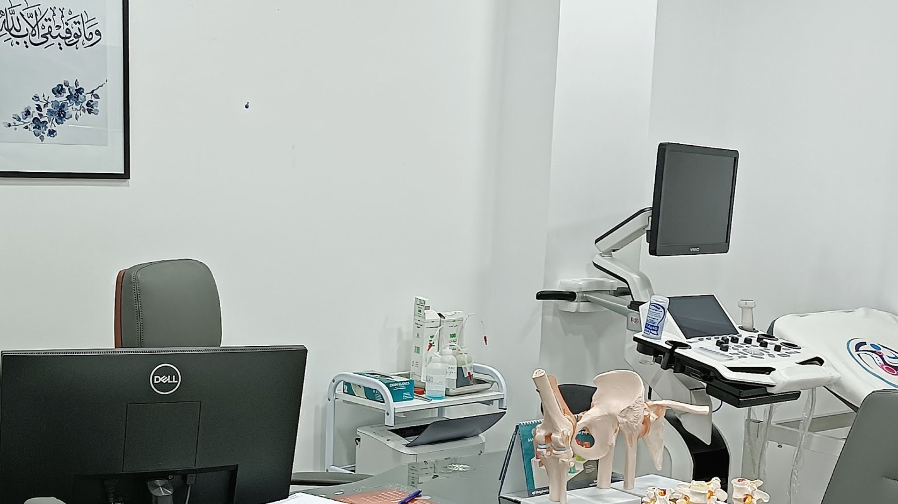
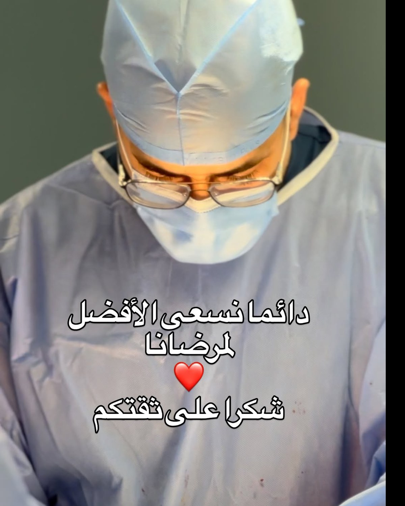
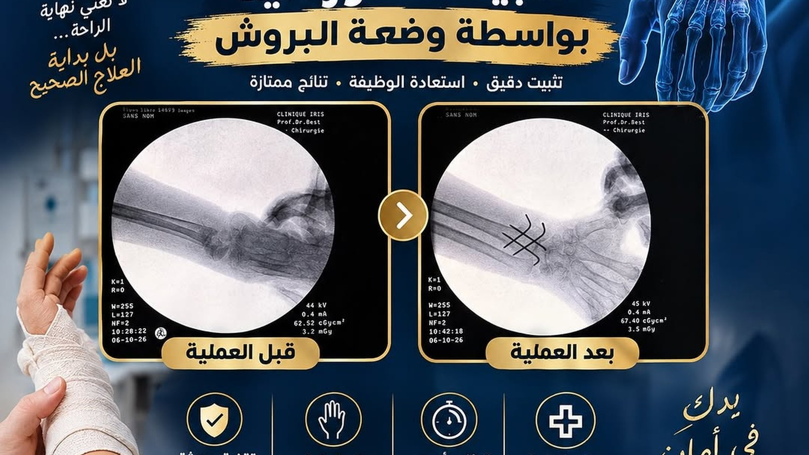
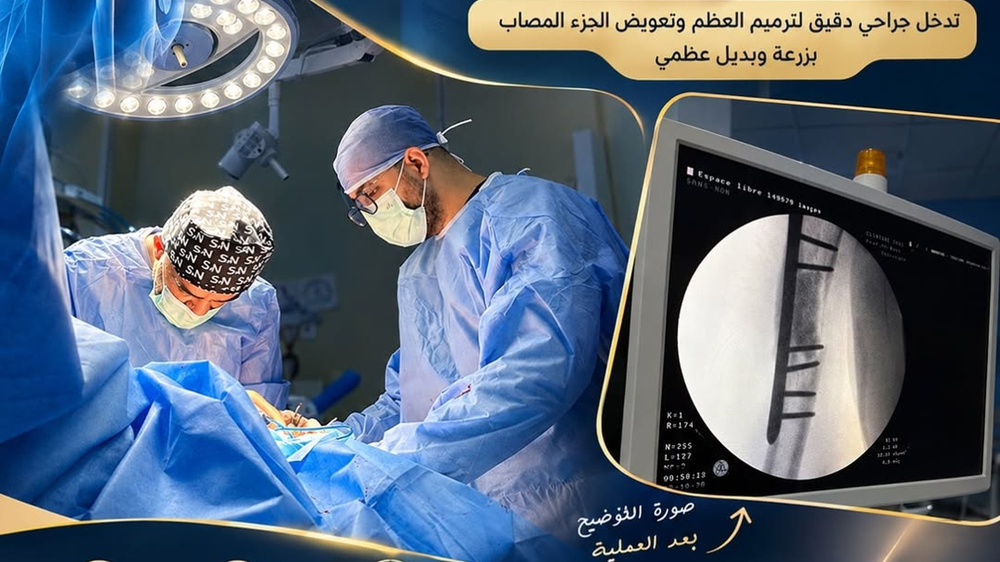

Le Dr Bacha Mohammed El Amine, spécialiste en chirurgie orthopédique et traumatologie, vous accompagne du diagnostic à la récupération : un traitement adapté à votre vie, expliqué simplement.
De la douleur articulaire à la chirurgie réparatrice : chaque situation bénéficie d'une évaluation individualisée et d'une solution adaptée.
Remplacement articulaire pour les arthroses avancées et les douleurs résistantes au traitement médical.
Traitement chirurgical de la coxarthrose et des séquelles traumatiques de la hanche.
Épaule douloureuse, capsulite, conflit sous-acromial et instabilité, prise en charge médicale ou chirurgicale.
Prise en charge des fractures, luxations et traumatismes de l'appareil locomoteur, aux urgences comme en consultation.
Entorses, lésions ligamentaires et méniscales, tendinopathies : retour au sport en toute sécurité.
Consultations de contrôle, rééducation personnalisée et accompagnement après l'intervention.

Spécialiste en chirurgie orthopédique et traumatologie à Oran, le Dr Bacha consacre sa pratique à la prise en charge des pathologies de l'os, de l'articulation et de la traumatologie du sportif comme du patient âgé.
Sa démarche repose sur un principe simple : expliquer avant de traiter. Comprendre la douleur, poser un diagnostic rigoureux, présenter les options, puis choisir ensemble la solution la plus adaptée à votre mode de vie.
Un chemin clair, du premier rendez-vous jusqu'à la reprise de vos activités.
Examen clinique approfondi, écoute de vos symptômes et analyse de vos examens d'imagerie.
Options thérapeutiques expliquées, examens complémentaires si nécessaire, décision partagée.
Geste chirurgical réalisé en milieu adapté, avec un protocole de récupération personnalisé.
Contrôles réguliers, coordination avec le kinésithérapeute et retour progressif à vos activités.


Une consultation permet d'identifier la cause exacte et d'éviter les traitements inutiles.
Note moyenne de 4,9/5 sur environ 50 avis Google.
« Un médecin professionnel, avec une excellente façon d'expliquer le traitement du patient. Il dissipe les craintes et l'anxiété avec beaucoup de professionnalisme. »
« Il écoute attentivement le patient, reste modeste et prend réellement le temps de l'examiner. Une expérience très positive. »
« L'un des meilleurs médecins que j'ai rencontrés. Un grand merci pour la qualité de la prise en charge. »
Les réponses aux interrogations les plus courantes avant une consultation.
Le cabinet vous accueille du samedi au jeudi, à Bir El Djir (Oran), à proximité du pôle Millénium.